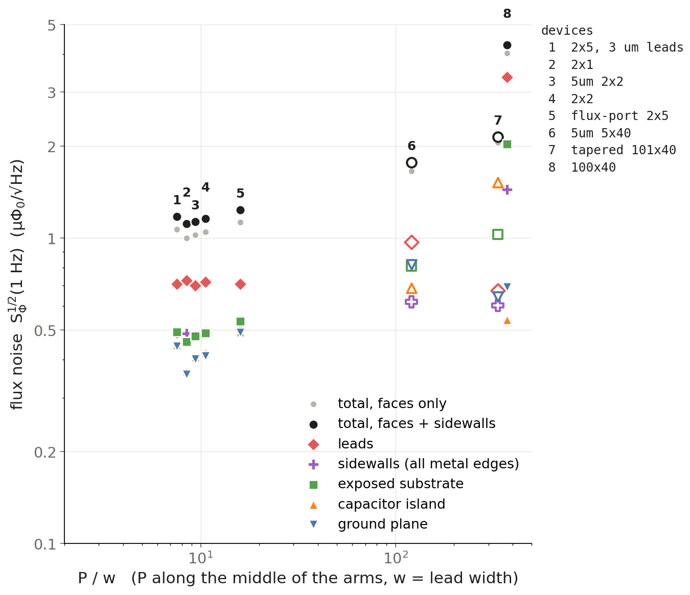
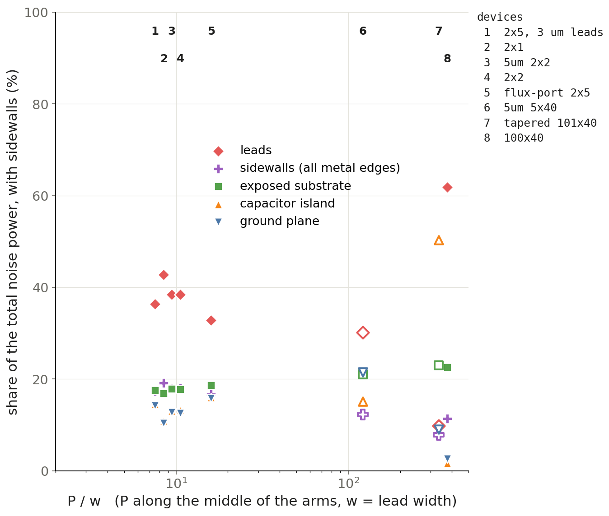

Each mesh coloured by the flux-noise section its surface belongs to:
leads, capacitor island and ground plane (top and bottom faces of the film, from the approved
section maps), the sidewalls (the 100 nm metal edges), and the exposed substrate (the bare chip
between the metal, with the SQUID hole in light green). Device numbers as in the P/w plot.
Every 3D InductEx/TTH run in data/tetra_sims/. Pick a device to open its mesh: the outer
faces of every tetrahedron, i.e. the top, bottom and sidewalls of the 100 nm film, coloured by element size or
current density. Thumbnails are top views of ±15 µm around the SQUID.
The numbers are the device numbers of the P/w noise plot below (script #32): point 3 in the plot is card 3 here.

Flux noise vs P/w, numbered by device (#32, 2_results/noise_vs_P_over_w_sections_3d_noise.png).

Share of the noise power per section, same numbers (…_share.png).
Devices without a number (–) are not in the plot: the 2x5x9 run has no current file, so it shows the mesh only. Mesh export: 3_code/34_mesh_viewer_export.py.
Outer faces of every tetrahedron in this run: the metal film including its sidewalls. Elements that span
the whole 100 nm show as one layer; the 0.18 µm junction bridges are finer.
Drag to rotate, right-drag to pan, scroll to zoom. Height is stretched; x and y are true scale.